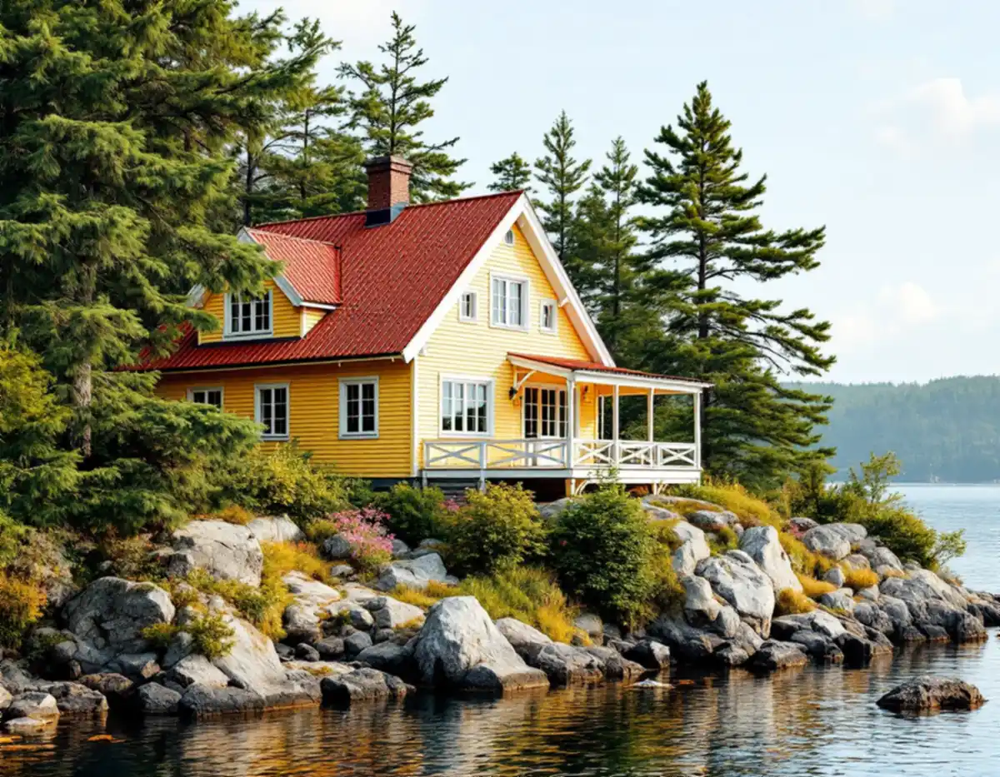
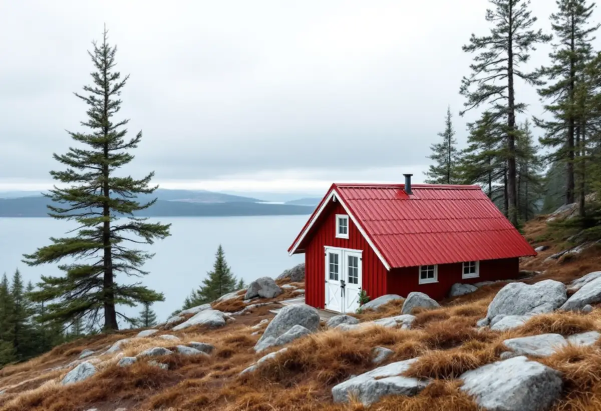

Besök på tomten
Vi bedömer tak, taksprång, rännor och beslag och hur ställningen kan stå i terrängen.

Längs farleden i Nacka har plåt legat på taken sedan de första sommarvillorna byggdes, och i villasamhällena längs Saltsjöbanan är takets form en del av det kommunen vill bevara.
Skicka gärna en bild på taket.
Något blev fel. Kontrollera uppgifterna eller ring 08 12 410 276.
Vi tittar på jobbet på plats innan du får offert.
Du ser vad som ingår och vad det kostar.
Vi drar av ROT direkt och sköter ansökan.
Geal Entreprenad AB, Bromma. Org.nr 559303-7566.

Geal Entreprenad AB har egna plåtslagare som lagar och byter plåttak, beslag och rännor i hela Nacka, med gratis platsbesök och skriftligt kostnadsförslag.
Kommunens kulturmiljöprogram för sommarnöjena vid farleden beskriver hur de tidiga sommarvillorna byggdes i en friare trähusarkitektur med snickeridetaljer från ångsågarna. När de nationalromantiska idéerna slog igenom i början av 1900-talet försvann schweizerutsmyckningarna till förmån för stramare detaljer, och plåttaken ersattes av tegeltak.
Därför ser taken olika ut från villa till villa. I flera av områdena som programmet beskriver – bland annat i Vikingshill och på Grävlingsberg – ligger plåt eller tegel på sadeltaken, och utskjutande taksprång räknas till de karaktärsdrag som bör bevaras. Taksprånget är också det ställe där plåten möter vind och regn först.
Ett gammalt plåttak på en sommarvilla har ofta lagats många gånger. Innan vi föreslår ett byte undersöker vi om falsarna går att efterfalsa och om skadorna sitter i plåten eller i anslutningarna kring skorsten och kupor.
Programmet beskriver också de enklare stugorna vid farleden. Om semesteranläggningen Visborgs minne skriver kommunen att det på de låga sadeltaken oftast ligger röd korrugerad plåt, att takutsprången är små och att nuvarande materialtyper bör användas vid underhåll och förnyelse. De röda plåttaken nämns som en del av det som gör stuggrupperna enhetliga.
Har du en före detta sportstuga med samma typ av tak, som numera bebos året runt, gäller samma sak. En korrugerad plåt som har rostat i överlappen kan ofta bytas skiva för skiva, men då ska profil, kulör och fästdon stämma med resten av taket.
När en stuga får isolerad vind blir taket kallare utvändigt och snön ligger kvar längre. Då behöver vi se över takfot, ränna och nock samtidigt, så att smältvatten inte fryser fast vid kanten. Mer om lokala tak i stort finns under takläggare i Nacka.
Östersjön är bräckt. Enligt SMHI är salthalten i Egentliga Östersjön 6–9 gram per kilo havsvatten, mot ungefär 35 gram i världshaven. Ändå gör fukt och vind från sjön att plåt, skruv och spik på strandtomter i Nacka utsätts för mer än på ett hus inne i skogen.
Vi väljer därför fästdon och plåt med ytskydd som passar läget, och undviker att blanda metaller som inte ska ligga mot varandra. På hus med fritt läge mot farleden kontrollerar vi särskilt vindskivor, nockplåt och fotplåt, eftersom det är där en storm brukar få fäste.
På branta tomter med berg i dagen planeras ställning och materialhantering redan vid platsbesöket. Mer om omläggning av hela taket finns under takrenovering i Nacka.
I programmet för villasamhällena vid järnvägen skriver kommunen att man i Saltsjöbaden eftersträvar att bevara befintliga tak, fasader, fönster och entréer, och att takkupor, terrasser och balkonger helst ska göras mot baksidan med ett utförande som underordnas huset. Tidstypisk utformning av bland annat tak ska behållas även i övriga villasamhällen längs banan.
Nacka kommun räknar byte av färg eller material på fasad eller tak och mindre takkupor som fasadändringar. Inom detaljplan krävs inte längre bygglov för dem på en- eller tvåbostadshus, men åtgärden får inte strida mot planen. Ligger fastigheten i ett område som är särskilt värdefullt enligt 8 kap. 13 § PBL krävs lov för alla fasadändringar som påverkar områdets karaktär eller husets yttre.
I kommunens karta visar lila markering särskilt höga kulturvärden, och orange att en bedömning kan pågå. Att gå från tegel till plåt, eller tvärtom, är just en sådan ändring som prövas där.
Vi bedömer tak, taksprång, rännor och beslag och hur ställningen kan stå i terrängen.
Kulturmiljökartan och detaljplanen kontrolleras innan material eller kulör ändras.
Lagning, delbyte och nytt tak redovisas var för sig i ett skriftligt förslag.
Material och skruv väljs efter läget, särskilt på tomter nära vattnet.
Plåten läggs med samma profil och kulör som tidigare där huset kräver det.
Rännor rensas, vi går igenom arbetet med dig och tar med allt spill.
Skatteverket godkänner rotavdrag för att reparera, rengöra eller byta plåttak, hängrännor och stuprör på ett småhus, och för ställningen som behövs för arbetet. Avdraget är högst 30 procent av arbetskostnaden, med 50 000 kr per person och år som tak och 75 000 kr för rot och rut sammanlagt.
Materialet ger inget avdrag. Geal drar avdraget direkt på fakturan.
Om plåten kan lagas eller behöver bytas, takets form med kupor och taksprång, materialvalet i utsatta lägen och hur svår tomten är att ställa ställning på. Efter ett gratis platsbesök får du ett skriftligt kostnadsförslag.
Plåttak, hängrännor och beslag.
Plåtslagare i Stockholm →Takbyte, takbesiktning och plåtarbeten.
Takläggare i Nacka →Saltsjöbaden, Boo och Älta.
Takrenovering i Nacka →Saltsjöbanan, kommunens mark och kulturkartan.
Attefallshus i Nacka →VA, LTA och dagvatten på tomten.
Byggföretag i Nacka →Uthus, räcken och plåt kring villan.
Fasadmålning i Nacka →Villasamhällena vid Saltsjöbanan.
Fönsterbyte i Nacka →Linoljefärg, väder och verkstad för villafönster.
Fönsterrenovering i Nacka →Slipa och olja trägolvet.
Golvslipning i Nacka →Villastäder, sommarhus och radhus.
Badrumsrenovering i Nacka →Sommarvillor, stugor och villor i Nacka.
Fasadrenovering i Nacka →Sommarvillor, stugor och hus med källarplan.
Golvläggare i Nacka →Radhuskök, sekelskiftesvillor och vedspis.
Köksrenovering i Nacka →Panelvillor och sommarnöjen i Nacka.
Målare i Nacka →Verandor, panel och altaner.
Snickare i Nacka →Skorsten, huvar och genomföringar vid nytt tak.
Takbyte i Nacka →Ny tapet och dold dekor i äldre villor.
Tapetsering i Nacka →Strandskydd och villasamhällen.
Tillbyggnad i Nacka →Nytt värmesystem när huset ändå görs om.
Totalrenovering i Nacka →Eller ring 08 12 410 276, mån–fre 08–17.
Skicka gärna en bild på taket.
Något blev fel. Kontrollera uppgifterna eller ring 08 12 410 276.